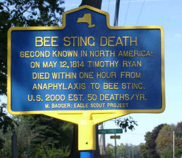

Bee Sting Death
Second Known in North America
A curious bit of upstate New York history can be found in the Dillon family cemetery on Rte 21 in Hopewell, NY between the City of Canandaigua and Village of Shortsville. (Map)
Buried there is Timothy Ryan — the second recorded fatality to a bee sting in North America (according to Ripley's "Believe It or Not"). The color of this story is enhanced by the commemoration of the bee sting death.
On the gravestone, which was crumbling and still partially decipherable as of 2001, was recorded the following witty epitaph:
In memory of
Timothy Ryan who
died May 12th 1814 in
the 66th year of his age
A thousand ways cut short our days
None are exempt from death
A honey bee by stinging me
Did stop my mortal breath
This grave contains the last remains
Of my frail house of clay
My soul is gone not to return
To one eternal day
Friends one & all both grate & small
Behold where I do lie
Whilst you are here for death prepare
Remember you must die
Historical Marker
To signify this bit of New York history, a marker was errected in 2001

as part of an Eagle Scout service project.
More photos and information about the marker are available here.
References
- George A. Dean, ``Early anaphylaxis to bee sting", J.A.M.A. (Journal of American Medical Association) 183 (1963), no. 9, 809-810.
- Eric M. Dreyfuss, ``The Rochester, New York tradition: allergy and allergists", Pediatric Asthma, Allergy & Immunology 5 (1991), no. 4, 283-286.
- Claude A. Frazier, Insect Allergy, Warren H. Green Inc., St. Louis, 1969, p. 87
- Federal Writer's Project, New York: A Guide to the Empire State, Oxford University Press, New York, 1940, p. 664.
- Susan Darling Safford, Quaint Epitaphs, Alfred Mudge & Son, Boston, 1895, p. 23.
- ``Scouting project turns up unusual history", March 12, 2001, Daily Messenger (Canandaigua, NY).
- Charles L. Wallis, Stories on Stone: a Book of American Epitaphs, Oxford University Press, New York, 1954, p. 118.
Page created by Matthew A Badger. Last updated on July 2, 2009.